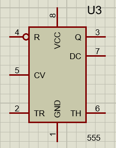
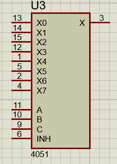
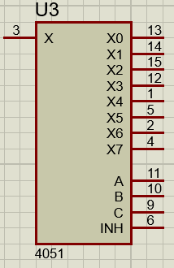
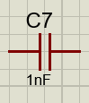
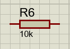
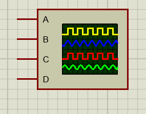
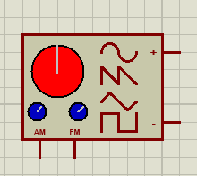
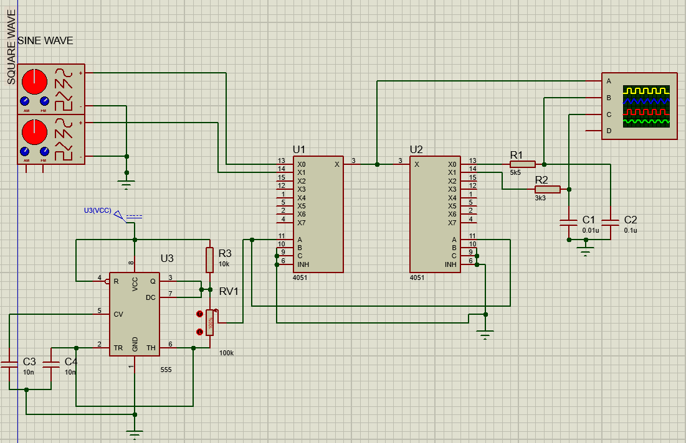
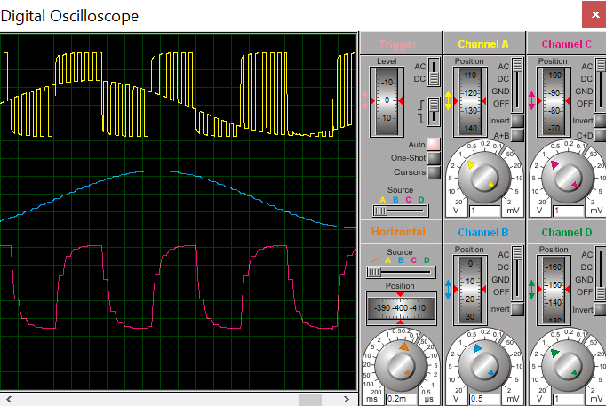
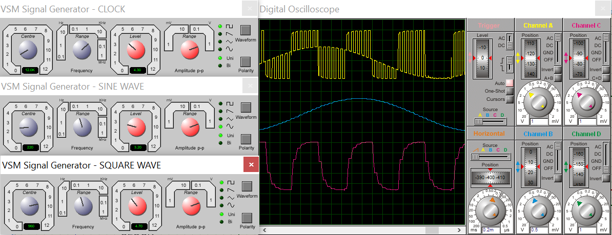

TDM
| PARAMETER | ANALOG SYSTEM | DIGITAL SYSTEM |
|---|---|---|
| Immunity to noise | Less | More |
| System complexity and implementation | More | Less |
| System Cost | More | Less |
| Error Detection and Correction | Not possible | Possible |
| Information Security | Less | More |
| Multiplexing Technique used | FDM | TDM |
| Bandwidth Requirement | Less | Due to higher bit rates,higher channel Bandwidth is Required |
| Programing and Coding | Not Possible | Possible |
| Modulation Technique | AM,FM,OAHSE MODULATION | ASK,FSK,PSK,PPM,PWM,PAM |
| Synchronization | Not required | required |
| Quality of Reconstruction | Good | Excellent |
| Components | Image | Values |
|---|---|---|
| 555 TIMER |  | - |
| Multiplexer (4051) |  | Name of the mux - 4051 |
| Demultiplexer (4051) |  | Name of the demux is- 4051 |
| Capaciter |  | 6-Capaciter |
| Resister |  | 6-Resister |
| Oscilloscope |  | - |
| Signal Genereter |  | - |


